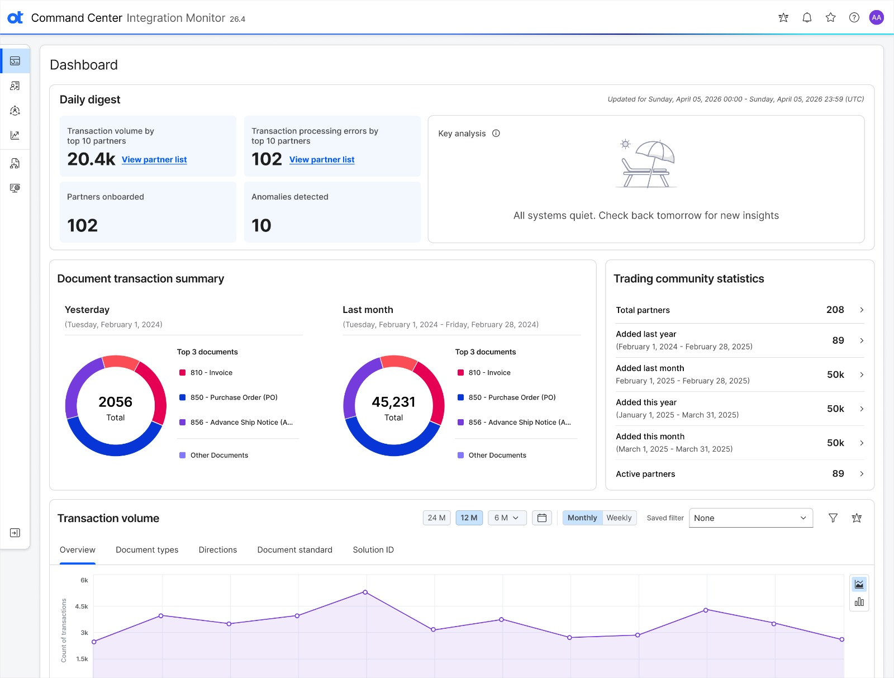
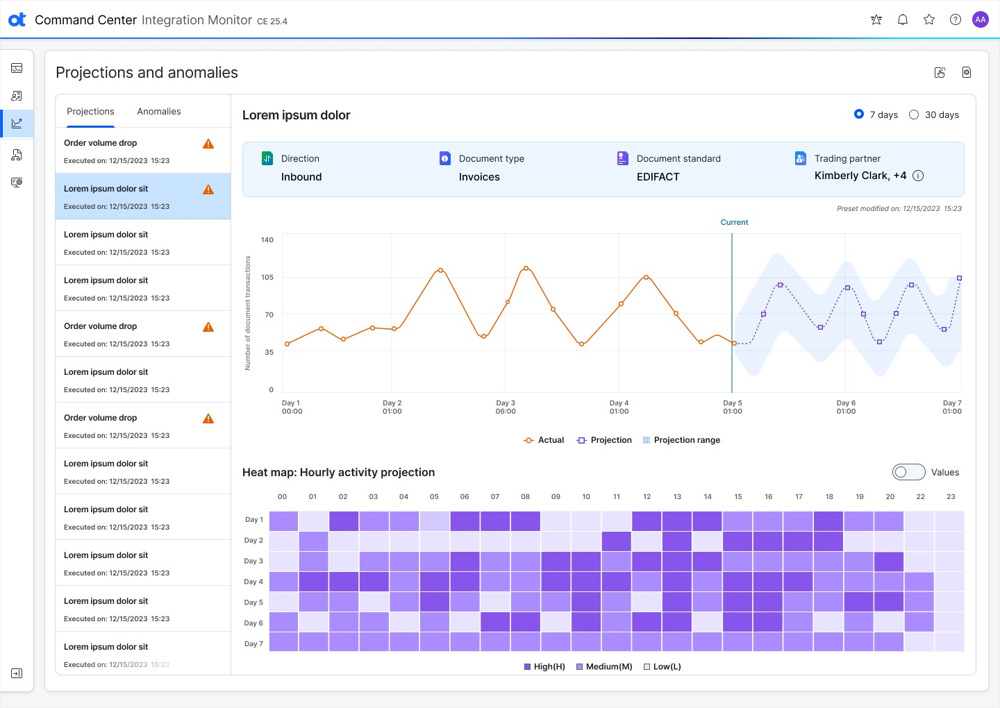
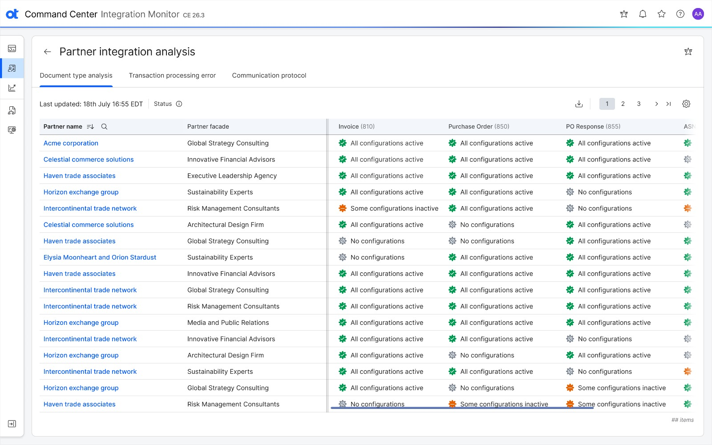
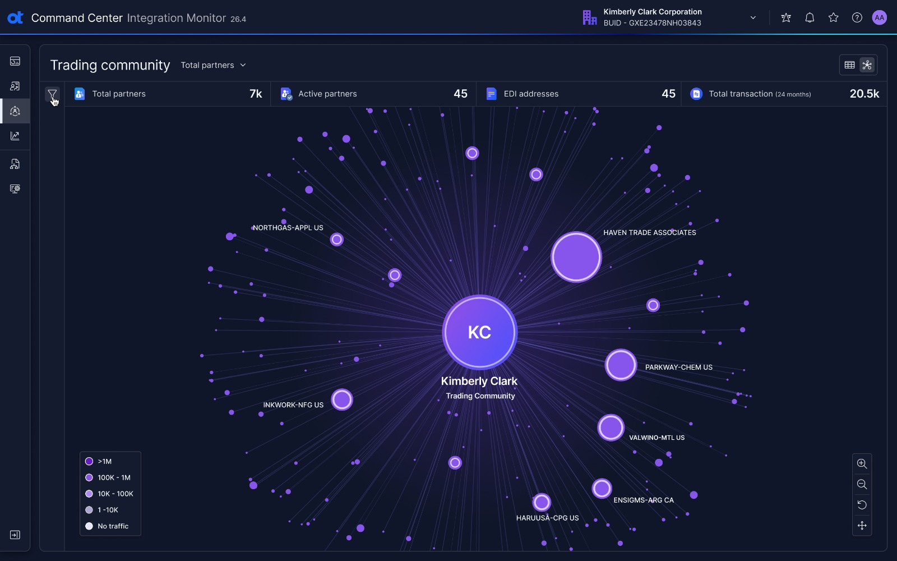
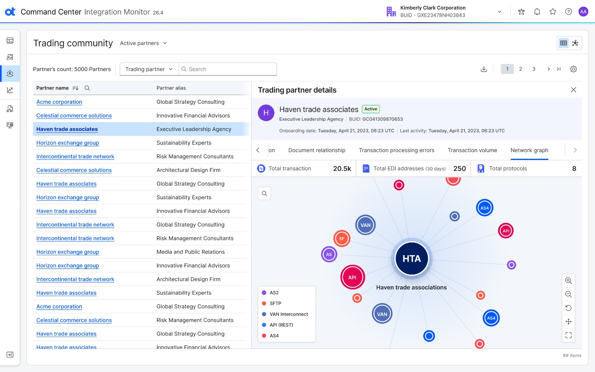

CASE STUDY / ENTERPRISE UX
FROM INTEGRATION NOISE
TO OPERATIONAL CLARITY.
Redesigning Command Center Integration Monitor to help enterprise operations teams detect abnormal behavior earlier, understand what changed, and move from an enterprise signal to partner-level investigation.
SIGNAL → CONTEXT → INVESTIGATION

01 / CONTEXT
THE PROBLEM WASN'T DATA.
IT WAS DISTANCE.
Enterprise integration teams monitor thousands of trading partners across different documents, protocols and transaction flows. The information exists. But when something goes wrong, users have to connect the dots themselves.
ENTERPRISE
↓PARTNER
↓PROTOCOL
↓DOCUMENT
↓TRANSACTION
↓ERROR
THE MORE COMPLEX THE NETWORK,
THE LONGER THE DISTANCE TO ANSWERS.
02 / CHALLENGE
WHEN SOMETHING GOES WRONG,
THE CLOCK STARTS.
Operational issues can surface through customer complaints, partner escalations or support tickets — creating delays before investigation even begins.
CCIM reduces time to awareness — so teams can respond faster and minimize impact.
ISSUES DISCOVERED
HIGH MANUAL
INVESTIGATION EFFORT
INCREASED BUSINESS
DISRUPTION
OPERATIONAL
INEFFICIENCY
THE CORE UX QUESTION
HOW MIGHT WE TURN
A SIGNAL INTO A DECISION?
WHAT HAPPENED?↓IS IT UNUSUAL?↓WHO IS AFFECTED?↓WHERE IS THE ISSUE?↓WHAT SHOULD I INVESTIGATE?
IO
PRIMARY USERIntegration / Operations Analyst
ACTIVE03 / USERS
DESIGNED FOR THE PEOPLE
KEEPING THE NETWORK MOVING.
Their job is to monitor the health of a large trading community and investigate issues before they become business-impacting incidents.
04 / PRINCIPLES
FOUR PRINCIPLES GUIDED
THE EXPERIENCE.
SURFACE
SIGNALS
Important changes should appear instead of forcing users to hunt.
CONTEXT BEFORE
COMPLEXITY
Start with the operational signal and progressively reveal detail.
PRESERVE THE
INVESTIGATION
Move from enterprise to partner to integration without losing context.
USE THE RIGHT
VISUAL MODEL
Tables for precision. Charts for trends. Graphs for relationships.
05 / INFORMATION ARCHITECTURE
THE EXPERIENCE IS A JOURNEY,
NOT A COLLECTION OF SCREENS.
COMMAND CENTER
06 / USER FLOW
FOLLOW THE SIGNAL.
01 / START WITH THE SIGNAL
THE OPERATIONAL
HEARTBEAT.
The dashboard answers a simple opening question: “Is today normal?” It creates a concise operational snapshot before users move into detail.
01 DAILY DIGESTA concise operational snapshot.
02 KEY ANALYSISMeaningful system-level insight.
03 TRANSACTION SUMMARYDocument activity at a glance.
04 COMMUNITY STATSPartner-level ecosystem activity.
02 / OBSERVE DEVIATION
DON'T JUST SHOW CHANGE.
SHOW DEVIATION.
The experience changes “What is the number?” into “Is the number normal?” — giving activity its expected range and meaningful context.
ACTUALWhat happened
PROJECTIONWhat was expected
PROJECTION RANGENormal variation
ANOMALYWhere behavior breaks pattern

Hourly activity projection adds temporal context, helping teams see how deviation develops over time.
03 / FROM SIGNAL TO SOURCE
ONE ECOSYSTEM.
THREE LENSES.
A partner can have different problems across documents, protocols and transaction processing. Each view provides a distinct way to investigate the same operational ecosystem.

PARTNER→DOCUMENT→PROTOCOL→ERROR
04 / WHEN RELATIONSHIPS MATTER
USE A NETWORK.
A trading community is inherently relational. A table tells you who exists. A network shows you how they connect.

ENTERPRISECONNECTED TOTRADING PARTNERSCONNECTED TOPROTOCOLS / ENDPOINTS
05 / PROGRESSIVE DISCLOSURE
ONE PARTNER.
ONE OPERATIONAL PICTURE.
A focused partner detail view gathers identity, status, onboarding, last activity, EDI addresses, protocols, document relationships, volume and errors without severing network context.
TRADING COMMUNITY→PARTNER→INTEGRATION DETAILS

07 / PROGRESSIVE DISCLOSURE
FROM A QUESTION
TO THE NEXT QUESTION.
“Something is happening.”
“Something is changing.”
“Who is affected?”
“Where is it happening?”
“What exactly is happening?”
08 / TRANSFORMATION
DATA → INSIGHT → INVESTIGATION
- Reactive
- Fragmented
- Data-heavy
- Hard to prioritize
- Manual investigation
- Proactive
- Connected
- Contextual
- Signal-driven
- Progressive investigation
09 / BUSINESS VALUE
THE OUTCOME ISN'T A PRETTIER DASHBOARD.
IT'S FASTER UNDERSTANDING.
↗ DETECT ISSUES EARLIER↓ REDUCE DOWNTIME◌ IMPROVE VISIBILITY→ ACCELERATE INVESTIGATIONS+ STRENGTHEN OPERATIONAL CONFIDENCE
LESS TIME SEARCHING.
MORE TIME UNDERSTANDING.
10 / DESIGN SYSTEM
ANALYTICAL CONFIDENCE
IS BUILT IN THE SYSTEM.
Clear hierarchy and semantic data states make complex operational information easier to parse, scan and act on.
TypographyData visualizationStatus statesCardsTabsTablesFiltersNetwork nodes
11 / REFLECTION
WHAT I LEARNED
ENTERPRISE UX IS OFTEN ABOUT REDUCING COGNITIVE DISTANCE.
DATA VISUALIZATION ISN'T DECORATION.
IT IS A NAVIGATION MODEL.
THE BEST DASHBOARDS DON'T ANSWER EVERY QUESTION. THEY HELP USERS ASK THE NEXT ONE.